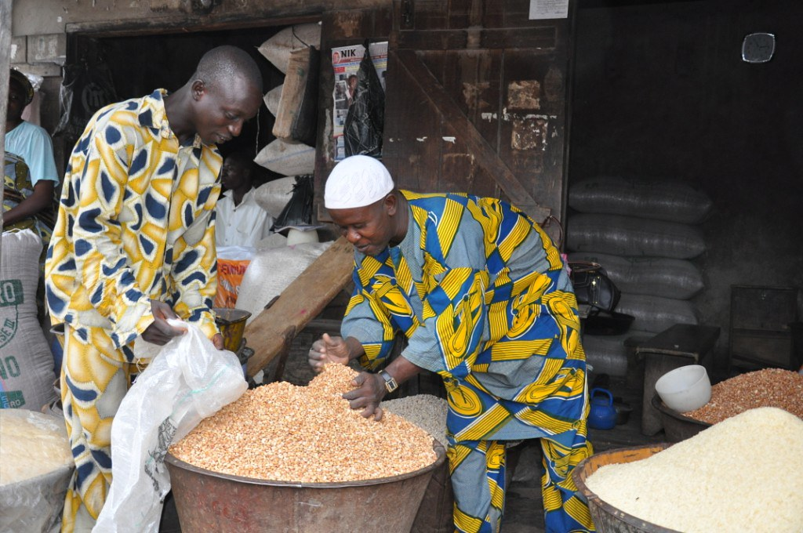

TRADE

Meaning of trade :
Trade can be defined as the exchange of goods, services, or money within the country or with other countries.
IMPORTANCE OF TRADE
Trade is important for several reasons, especially in a country like Nigeria
-
Trade boosts economic growth by generating income through the exchange of goods and services.
-
It provides employment opportunities across various sectors, such as agriculture, manufacturing, and retail, helping to reduce unemployment.
-
Trade allows Nigerians to access a wider variety of goods and services, including those not produced locally, improving the standard of living.
-
International trade brings in foreign exchange, which is crucial for importing goods and supporting the country's economy.
-
Trade encourages businesses to innovate and compete, leading to better products and services and overall economic advancement.
FORMS/TYPES OF TRADE
-
Home Trade: Refers to the buying and selling of goods and services within Nigeria. Such as transactions occurring in local markets or retail stores across cities and towns.
-
Foreign Trade: Involves the exchange of goods and services between Nigeria and other countries. This includes exporting products like oil and cocoa and importing items like machinery and electronics.
-
Aid to Trade: Includes support measures to facilitate and improve trade. Such as infrastructure development, trade policies, and financial assistance to businesses to enhance their ability to trade both domestically and internationally.
AID TO TRADE
Aid to trade includes support measures such as:
-
Banking: Providing trade finance, credit, and other financial services to facilitate transactions.
-
Insurance: Offering risk management tools to protect against losses and uncertainties in trade.
-
Warehousing: Providing storage facilities to manage and safeguard goods, ensuring efficient distribution.
ROLES OF CUSTOM SERVICE IN FOREIGN TRADE
The Nigeria Customs Service (NCS) plays several crucial roles in foreign trade, including:
-
Regulating Imports and Exports: Ensures goods entering or leaving Nigeria meet the country's rules and standards.
-
Collecting Duties and Taxes: Collects tariffs and taxes on goods to generate revenue and protect local businesses.
-
Preventing Smuggling: Stops illegal activities like smuggling to keep trade honest.
-
Facilitating Trade: Makes customs processes smoother and faster to help businesses trade more efficiently.
-
Providing Trade Statistics: Gathers and shares data on trade to help with policy and business decisions.